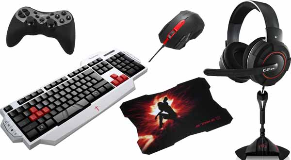

Otro punto importante son el resto de accesorios que deberá tener tu ordenador gaming, como son el ratón, el teclado y los auriculares. En Hablamos de Gamers hemos publicado comparativas sobre estos accesorios y componentes gaming, te animo a echarles una ojeada para resolver todas tus dudas. Fundamentalmente, señalar que también es muy importante tener buenos accesorios de este tipo, en especial para los juegos PvP. Más adelante, en este propio artículo, analizaremos los beneficios que te puede proporcionar un pc gaming en juegos PvP.
